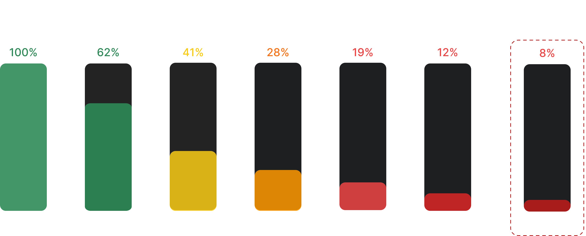
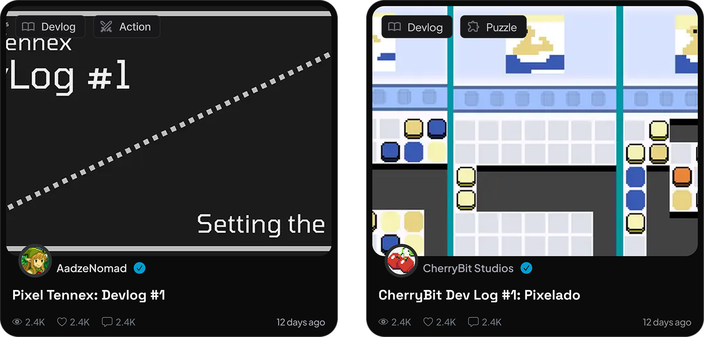
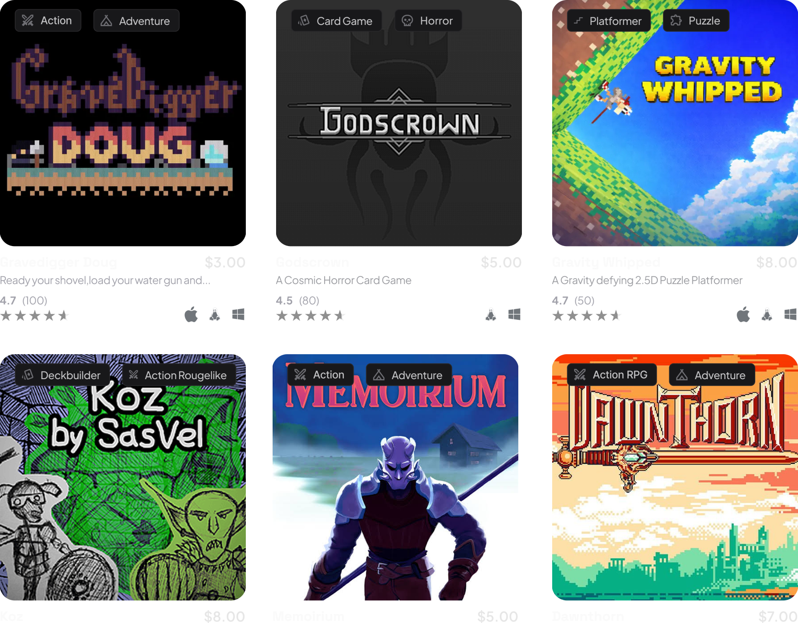
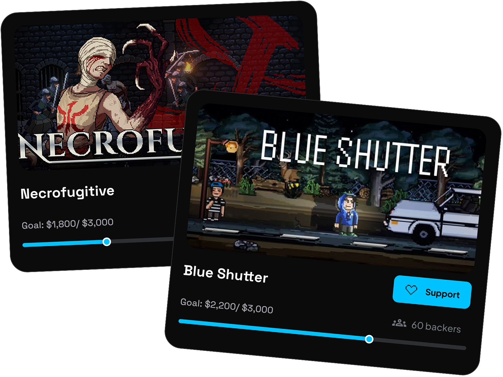

Weekly Active Users
40% Weekly Posting Participation
Posting shifted from passive browsing to active contribution, with 40% of weekly active users creating posts each week.
 Let's Talk
Let's Talk

Player 3 was built to connect developers and players, but long form articles were quietly killing that mission. As the sole designer behind Player 3's redesign, I reimagined the platform around Bits, a lightweight update system that made sharing progress as easy as sending a tweet, driving 40% of weekly active users to post every single week.
View WebsitePosting shifted from passive browsing to active contribution, with 40% of weekly active users creating posts each week.
What started as roughly 1 post per week exploded to over 10, signaling that users finally had a reason to keep showing up.
Removing the posting barrier gave users a reason to return, with twice as many people coming back within their first seven days.
Short updates encouraged faster back-and-forth conversations including feedback, advice, reactions, and recommendations.
Player 3 spotted something the entire gaming industry was ignoring.
"There was no shared ecosystem for developers and players to connect."
Developers lived across six different platforms trying to reach fans and stay relevant, while players who wanted to get in early on their next hidden gem and support the creator behind it had no single place to do that.
That disconnect is exactly what Player 3 set out to fix.
Both developers and gamers showed up to Player 3 looking for connection, but a platform that demanded long form articles just to post something gave them every reason to leave and never come back.

The goal wasn't just to make posting easier.
It was to create a place where developers could build an audience around their games and players could discover, follow, and support them before launch.
That shift transformed Player 3 into a more active community where 40% of weekly active users contributed every week.
Share updates, gameplay, and thoughts that bring developers and players together around the games they love.


Dedicated space for developers to share behind-the-scenes stories, development updates, and major milestones with their community.

Explore a growing collection of indie games and discover your next favorite before everyone else.

Back the developers you believe in and help turn great ideas into finished games.

I started by looking at the platforms developers and players already used. That's when I started noticing a few patterns.